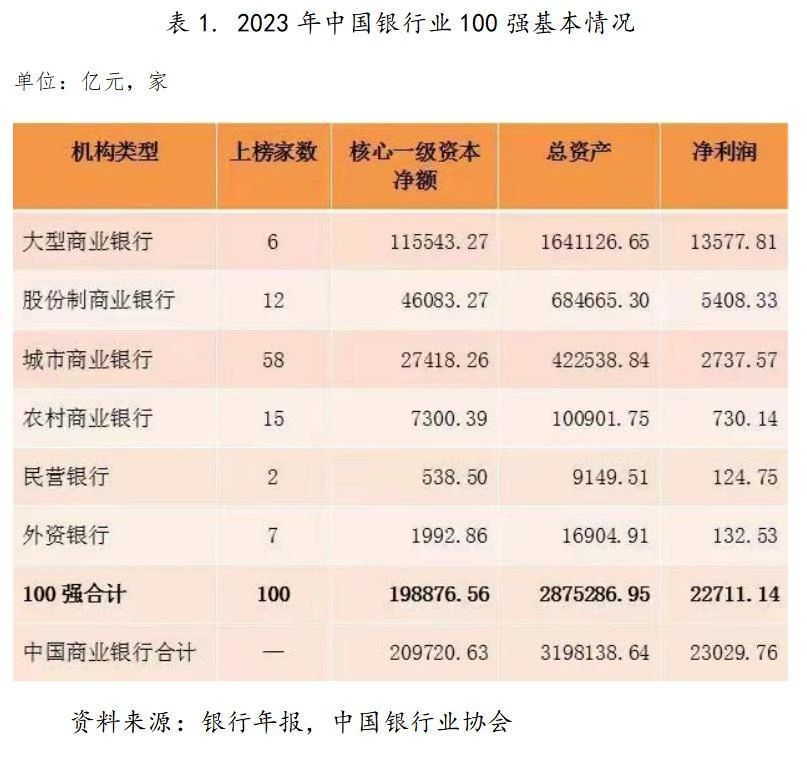

基本情况
分机构类型看，100 强银行包括 6 家大型商业银行、12 家全国性股份制商业银行、58 家城市商业银行、15 家农村商业银行、2 家民营银行和 7 家外资银行（详见表 1），核心一级资本占比分别为 58.10%、23.17%、13.79%、3.67%、0.27% 和 1.00%。按照银行总部所在地看，广东、北京、上海和浙江四地上榜银行最多，分别有 14、11、11 和 10 家银行，合占 100 强上榜数量的 46.0%，占上榜银行资产的 84.63%。此外，100 强中有 45 家为上市银行，资产占比 89.91%。首次上榜银行除 7 家外资银行外，还有山西银行、日照银行和网商银行等 3 家银行。

首次上榜银行
2022年排名 机构名称 2021年排名 排名变化 变化幅度 34 汇丰银行（中国） - - 首次上榜 68 渣打银行（中国） - - 首次上榜 71 花旗银行（中国） - - 首次上榜 79 三菱日联银行（中国） - - 首次上榜 86 三井住友银行（中国） - - 首次上榜 88 东亚银行（中国） - - 首次上榜 90 山西银行 - - 首次上榜 93 瑞穗银行（中国） - - 首次上榜 97 日照银行 - - 首次上榜 100 浙江网商银行 - - 首次上榜 排名变化情况（按变化幅度排序）
2022年排名 机构名称 2021年排名 排名变化 变化幅度 66 珠海华润银行 88 上升 22 51 桂林银行 72 上升 21 73 长安银行 85 上升 12 49 深圳前海微众银行 58 上升 9 30 中原银行 35 上升 5 35 成都银行 40 上升 5 62 青岛银行 67 上升 5 58 东莞银行 62 上升 4 26 杭州银行 28 上升 2 61 齐鲁银行 63 上升 2 24 徽商银行 25 上升 1 29 北京农商银行 30 上升 1 37 贵阳银行 38 上升 1 38 东莞农村商业银行 39 上升 1 40 深圳农商银行 41 上升 1 44 吉林银行 45 上升 1 47 昆仑银行 48 上升 1 53 天津农商银行 54 上升 1 76 浙江泰隆商业银行 77 上升 1 1 中国工商银行 1 保持 0 2 中国建设银行 2 保持 0 3 中国农业银行 3 保持 0 4 中国银行 4 保持 0 5 交通银行 5 保持 0 6 招商银行 6 保持 0 7 中国邮政储蓄银行 7 保持 0 8 兴业银行 8 保持 0 9 上海浦东发展银行 9 保持 0 10 中信银行 10 保持 0 11 中国民生银行 11 保持 0 12 中国光大银行 12 保持 0 13 平安银行 13 保持 0 14 华夏银行 14 保持 0 15 北京银行 15 保持 0 16 广发银行 16 保持 0 17 上海银行 17 保持 0 18 江苏银行 18 保持 0 19 宁波银行 19 保持 0 20 浙商银行 20 保持 0 21 南京银行 21 保持 0 22 重庆农村商业银行 22 保持 0 23 上海农商银行 23 保持 0 27 恒丰银行 27 保持 0 33 天津银行 33 保持 0 36 长沙银行 36 保持 0 42 广州银行 42 保持 0 43 重庆银行 43 保持 0 46 贵州银行 46 保持 0 52 江苏江南农村商业银行 52 保持 0 81 常熟农商银行 81 保持 0 96 张家口银行 96 保持 0 25 渤海银行 24 下降 -1 32 厦门国际银行 31 下降 -1 45 郑州银行 44 下降 -1 48 江西银行 47 下降 -1 50 苏州银行 49 下降 -1 67 杭州联合银行 66 下降 -1 85 广东华兴银行 84 下降 -1 28 盛京银行 26 下降 -2 31 广州农商银行 29 下降 -2 39 成都农商银行 37 下降 -2 57 大连银行 55 下降 -2 63 湖南银行 61 下降 -2 82 广西北部湾银行 80 下降 -2 56 四川银行 53 下降 -3 59 青岛农商银行 56 下降 -3 60 河北银行 57 下降 -3 72 兰州银行 69 下降 -3 74 台州银行 71 下降 -3 54 顺德农商银行 50 下降 -4 55 甘肃银行 51 下降 -4 64 西安银行 60 下降 -4 69 汉口银行 65 下降 -4 78 晋商银行 74 下降 -4 94 唐山银行 90 下降 -4 80 浙江稠州商业银行 75 下降 -5 65 湖北银行 59 下降 -6 70 九江银行 64 下降 -6 84 富滇银行 78 下降 -6 95 萧山农商银行 89 下降 -6 99 重庆三峡银行 93 下降 -6 41 哈尔滨银行 34 下降 -7 75 武汉农村商业银行 68 下降 -7 77 南海农商银行 70 下降 -7 98 广东南粤银行 91 下降 -7 87 厦门银行 79 下降 -8 91 廊坊银行 82 下降 -9 92 威海市商业银行 83 下降 -9 83 温州银行 73 下降 -10 89 蒙商银行 76 下降 -13 更名情况
2022年排名 机构名称 曾用名（21年上榜名称） 40 深圳农商银行 深圳农村商业银行 52 江苏江南农村商业银行 江南农村商业银行 54 顺德农商银行 顺德农村商业银行 63 湖南银行 华融湘江银行 77 南海农商银行 南海农村商业银行